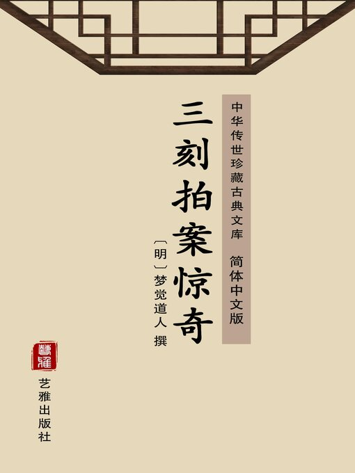

朱颜绿鬓色偏娇，就□(之)能令骨髓消。
朱颜绿鬓色偏娇，就□(之)能令骨髓消。#

莫笑狐妖有媚态，须知人类更多妖!
明眸皓齿，莲脸柳腰，与文姬无二。又聚了些木叶在地，她在上面一个觔斗，早已翠襦红裙，穿上一身衣服，俨似文姬平日穿的，准拟来媚蒋日休。
只见日休这日坐在房中，寂寞得紧，拿了一本吴歌儿，在那边轻轻的嘲道：
风冷飕飕十月天，被儿里冰出哪介眠？姐呀！妳也孤单我也独，不如滚个一团团。相思两好介便容易成，那介郎有心来姐没心。姐呀！猫儿狗儿也有个思春意，哪为铁打心肠独拄门？
正在那厢把头颠，手敲着桌，谩谩的讴，只听得房门上有人弹上几弹：
月弄一窗虚白，灯摇四壁孤青。
何处数声剥啄？惊人残醉初醒。
侧耳听时，又似弹的声，他把门轻轻拨开，只见外面立着一个女子：
□□□□(轻风拂拂)罗衫动，发松斜溜金钗凤。
□□□□(娇姿神女)不□(争)多，□□□(恍疑身)作襄王梦。
把一个蒋日休惊得神魂都失，喜得心花都开。
悄语□(低)声道：“请里面坐。”那女子便轻移莲步，走进房来。
蒋日休便把门关上，女子摇手道：“且慢，妾就要去。”两个立向灯前，日休仔细一看，却是文姬。
日休见了，便一把抱住，放在膝上，道：“姐姐，什风吹得妳来？我这几日为妳饮食无心，睡卧不宁，几次要与妳说几句知心话，怕触妳恼。要进妳房里来，又怕人知觉。不料今日姐姐怜念，这恩没世不忘。”便要替她解衣同睡。
文姬道：“郎君且莫造次。我只为数年前相见，便已留心；如今相逢，越发留念。意思要与你成其夫妇，又不好对父母说，恐怕不从。你怎生计议，我与你得偕伉俪。”
日休道：“天日在上，我也原要娶姐姐。与我母舅计议，他道妳爹娘断断不肯。后来欲央他人，又恐事不成，反多一番不快，添妳爹娘一番疑忌，故此迟疑。喜得今日姐姐光降，一诉心事。”
文姬道：“这等我且回。”
日休道：“今日奇遇，怎可空回？”定要留住合欢。
那文姬叹息道：“我今日之来，原非私奔，要与你议终身之计。今事尚未定，岂可失身？使他人笑我是不廉之妇。且俟六礼行后，与君合卺。”
蒋日休急忙跪下发誓道：“我若负姐姐，身死盗手，尸骨不得还乡！”
文姬道：“我也度量你不是薄幸的，只恐你我都有父母，若一边不从，这事就不谐。那时欲从君不能，欲嫁人，其身已失，如何是好？”
日休道：“我有誓在先，毕竟要与姐姐成其夫妇，姐姐莫要掯我。”
文姬道：“还怕后日说我就你。”日休千说誓，万罚咒，文姬就假脱手，侧了脸，任他解衣。将到里衣，她挥手相拒。蒋日休晓得灯前怕露身体，忙把灯吹了，竟抱她上床，自己也脱衣就寝。一只手把文姬搂了，又为她解里衣。
文姬道：“我一念不坚，此身失于郎手了。只是念我是个处子，莫要轻狂。”
日休道：“我自深加爱惜，姐姐不要惊怕。”
此时淡月入帏，轻茫可辨，只见他两个呵：
粉脸相偎，香肌相压，交搂玉臂，联璧争辉。缓接朱唇，清香暗度。喜孜孜轻投玉杵，羞答答关蹙翠眉。羞的侧着脸儿承，风紧柳枝不胜摆；喜得曲着身而进。春深锦箨不停抽。低低微笑，新红片片已掉渔舟；宛宛娇啼，柔绿阴阴未经急雨。偎避处金钗斜溜，仓卒处香汗频流。正是：
乍入巫山梦，云情正自稠。
直教飞峡雨，意兴始方休。
两个顽勾多时，一个用尽款款轻轻的手段，一个做尽娇娇怯怯的态度。
文姬低低对日休道：“今日妾成人之始，正欢好之始，愿得常同此好。”
日休道：“旅馆凄凉，得姐姐暂解幽寂，正要姐姐夜夜赐顾。”
文姬道：“这或不能。但幸不与爹娘同房，从今以后，倘可脱身，断不会令你独处。只是我你从今以后倒要避些嫌疑，相见时切不可戏谑。若为人看出，反成间阻。待从容与你商量谐老之计。”未天明，悄悄送出房门。日休叮嘱她晚间早来，文姬点头去了。
日休回到房中，只见新红犹在，好不自喜得计。自此因文姬吩咐，也不甚进里边去。遇着文姬时，倒反避了，也不与她接谈。晚间或是预先日里悄悄藏下一壶酒，或是果菜之类，专待她来。把房门也只轻掩，将房内收拾得洁洁净净，床被都熏得喷香。傍晚先睡一睡，息些精神，将起更，听得各客房安息，就在门边蹴来蹴去等候。才弹得一声门，他早已开了。
文姬笑道：“有这样老实人，明日来迟些，叫你等哩！”日休一把搂住道：“冤家！我一吃早饭就巴不得晚。等到如今，妳还要耍我。”就将出酒来，脸儿贴了脸儿，你一口，我一口，吃得甚是绸缪。那文姬作娇作痴，把手搭着他肩，并坐说些闲话。
到酒兴浓时，两个就说去睡，你替我脱衣服，我替你脱衣服，熟客熟主，也没那些惧怯的光景。蒋日休因见她惯，也便恣意快活。真也是鱼得水，火得柴，再没一个脱空之夜。有时文姬也拿些酒肴来，两个对饮。
说起，文姬道：“我与你情投意合，断断要随你了。如今也不必对我爹娘说，只待你货完，我是带了些衣饰，随你逃去便是。”
蒋日休道：“这使不得！倘你爹娘疑心是我，赶来，我米船须行得迟，定然赶着。那时妳脱不得个淫奔，我脱不得个拐带，如何是了？且再待半月，我舅子来，毕竟要他说亲，我情愿赘在妳家便了。”
文姬道：“正是，爹或不从，我誓死不嫁他人，也毕竟勉强依我。”
蒋日休是个小官儿，被她这等牢宠，怎不死心塌地。只是如此二十余日，没有个夤夜来就，使她空回之理，男歇女不歇，把一个精明强壮后生弄得精神恍惚，语言无绪，面色渐渐痿黄。
袅袅是宫腰，婷婷无限娇。
谁知有膏火，肌骨暗中消。
这个邻房季东池与韦梅轩都是老成客人。季东池有些耳聋，他见蒋日休这个光景，道：“蒋日休，我看你也是个少年老成，惯走江湖的，料也不是想家。怎这几日这等没留没乱，脸色都消瘦了？欲待同你到妓馆里去走走，只说我老成人哄你去嫖。你自病还须自医，客边在这里，要自捉摸。”
蒋日休道：“我没什病。”
韦梅轩道：“是快活出来的！我老成人，不管闲事，你每日房里唧哝些什么？”
蒋日休红了脸道：“我自言自语，想着家里。”
季东池侧耳来听，道：“是什么？”
韦梅轩大声道：“说是想家！”
季东池道：“又不曾做亲，想什的？”
韦梅轩又道：“日休，这是拆骨头生意，你不要着魔，事须瞒我不过。”
午后，韦梅轩走到他房中来，蒋日休正痴睡。韦梅轩见他被上有许多毛，他动疑道：“日休，性命不是当耍的，我夜间听你房中有些响动，你被上又有许多毛，莫不着了什怪？”
日休道：“实没什事。”
韦梅轩道：“不要瞒我，趁早计较。”日休还是沉吟不说。
韦梅轩也是有心的。到次早钟响后，假说肚疼解手，悄悄出房，躲在黑影子里。见日休门开，闪出一个女子来。他随趁脚进去，日休正在床中。韦梅轩道：“日休，适才去的什么人？”
日休失惊，悄悄附韦梅轩耳道：“是店主人之女，切不可露风，我自做东道请你。”
梅轩摇头道：“东道小事，你只想这房里到里边，也隔几重门户，怎轻易进出？怎你只一二十日，弄到这嘴脸？一定着鬼了。仔细，仔细！”日休小伙子，没什见识，便惊慌，要他解救。
韦梅轩道：“莫忙，你是常进去的，你只想你与店主人女儿怎么勾搭起的？”
日休道：“并不曾勾搭。她半月前自来就我。”
梅轩道：“这一发可疑。你近来日间在里边遇她，与你有情么？”
日休道：“她叫日间各避嫌疑。”
梅轩道：“这越发蹊跷。你且去试一试，若她有情，或者是真；没情，这一定是鬼。”
果然日休依他，径闯进去。文姬是见惯的，也不躲他。他便戏了脸，叫道：“文姬！”
文姬就作色道：“文姬不是你叫的！”
日休道：“昨夜间辛苦，好茶与一碗。”
文姬恼恼的道：“干我什事！要茶台子上有。”便闪了进去。
日休见了光景，来回复梅轩。
梅轩道：“你且未可造次。你今晚将稀布袋盛一升芝麻送她，不拘是人是鬼，明日随芝麻去，可以寻着。”日休依了。
晚间战战兢兢，不敢与她缠。那文姬捱着要顽，日休只得依她。临去，与她这布袋作赠，道：“我已是病了，以此相赠。待我病好再会。”文姬含泪而去。
天明，日休忙起来看时，沿路果有芝麻。却出门往屋后，竟在山路上，一路洒去。一路或多或少，或断或连，走有数里，却是径道，崎岖险峋，林木幽密。转过山岩，到一洞口，却见一物睡在那里：
一身莹似雪，四爪利如锥。
曾在山林里，公然假虎威。
是一个狐狸，顶着一个骷髅鼾然而睡，芝麻布袋还在它身边。蒋日休见了便喊道：“我几乎被妳迷杀了！”
只见那狐惊醒了，便作人言道：“蒋日休，你曾发誓不负我。你如今不要害我，我还有事报你，你在此等着。”
它走入紫霞洞中，衔出三束草来，道：“你病不在膏肓，却也非庸医治得。你只将此一束草煎汤饮，可以脱然病愈。”又衔第二束道：“你将此束暗地丢在店家屋上。不出三日，店主女子便得奇病，流脓作臭，人不可近。她家厌恶，思要弃她。你可说医得，只要她与你作妻子。若依你时，你将此第三束煎汤与她洗，包你如故。这便是我报你。只是我也与你相与二十日，不为无情，莫对新人，忘却昔日。”不觉泪下。日休也不觉流涕。
将行，那狐狸又衔住衣道：“这事你要与我隐瞒，恐他人知得害我。”日休便带了这三束草下山，又将剩下芝麻乱撒，以乱其迹。
回时，暗对梅轩道：“亏你！绝了这鬼。”
梅轩道：“曾去寻么？”
道：“寻去，是在山上。想芝麻少，半路就完了，寻不去。”
韦梅轩道：“只要你识得破，不着它道儿罢了，定要寻它出来做什？”
当晚，日休又做东道请韦梅轩，道：“不亏你，几乎断送性命，又且把一个主人女子名来污蔑。还只求你替我隐瞒，莫使主人知道，说我轻薄。”
到次日，依了狐狸。将一束草来剉碎，煎汤服了。不三日，精神强壮，意气清明，脸上黄气也脱去了。
意气□(昂)轩色相妍，少年风度又嫣然。
一朝遂得沉疴脱，奇遇□□□□□(山中云雨仙)。
季东池道：“我说自病自医，你看我说过，想□□□□(你会排遣)，一、两日便好了。”
此时收米将完，正待起身，值□□□□(舅子来)道：“下边米得价，带去尽行卖完。如今目下收完的，我先带去。身边还有银百余两，你再收赶来。”也是姻缘，竟把他又留在汉阳。
日休见第一束草有效，便暗暗将第二束草撇在店家屋上试她。
果是有些古怪，到得三日，那文姬觉得遍身作痒，不住的把手去搔，越搔越痒，身上皮肉都抓伤。次日，忽然搔处都变成疮。初时累累然是些红瘰儿，到后都起了脓头儿。家中先时说是疥疮，后来道是脓窠疮，都不在意。不期那脓头一破，遍身没一点儿不流脓淌血，况且腥秽难闻。一床席上都是脓血的痕，一床被上都是脓血的迹。这番熊汉江夫妻着急，蒋日休却暗暗称奇。
先寻一个草头郎中，道：“这不过流脓疮，我这里有绝妙沁药，沁上去，一个个脓干血止，三日就褪下疮魇，依然如故。”与了他几分银子去。不验，又换一个，道：“这血风疮，该用敷药去敷。”遍身都是敷药，并无一些见效。这番又寻一个郎中，他道是大方家，道：“凡疮毒皆因血脉不和。先里边活了血，外面自然好。若只攻外，而反把毒气逼入里边，虽一时好得，还要后发。还该里外夹攻，一边吃官料药和血养血，一边用草药洗，洗后去敷，这才得好。”却又无干。一连换了几个郎中，用了许多钱钞，哪里得好？一个花枝女子，头面何等标致，身体何等香软，如今却是个没皮果子，宛转在脓血之中。莫说到她身边，只到她房门口，这阵秽污之气已当不得了。
熊汉江生意也没心做，只是叹气。她的母亲也只说她前生不知造什业，今在这里受罪。
文姬也恹恹一息的道：“母亲，这原是我前生冤业，料也不得好了。但只是早死一日，也使我少受苦一日。如今妳看我身上，一件衣服都是脓血浆的一般，触着便疼，好不痛楚。母亲可对爹爹说，不如把我丢入江水中，倒也干净，也只得一时苦。”
母亲道：“妳且捱去，我们怎下得这手？”
那蒋日休道：“这两束草直凭灵验。如今想该用第三束草了。”
来问熊汉江道：“令爱贵恙好了么？”
熊汉江道：“正是不死不活，在这里淘气，医□□(生也)没个医得，只自听天罢了。”
蒋日休想道：“他也厌烦，要他的(女儿)做老婆，料必肯了。”
此时季东池、韦梅轩将行，日休来见他道：“我一向在江湖上走，学得两个海上仙方，专治世间奇难疾病。如今熊汉江令爱的病我医得，只是医好了要与我作妻室。”
季东池道：“这一定肯。若活得，原也是个拾得的一般。只是他不信你会医。你晓得她是什么疮？什么病？”
蒋日休道：“药不执方，病无定症。我只要包医一个光光鲜鲜女子还他便了。”
东池道：“难说。”
韦梅轩道：“或者有之。他前日会得医自，必然如今医得她。我们且替你说说看。”
两个便向店主道：“熊汉江，适才蒋日休说他医得令爱，只是医好了就要与他作阿正，这使得么？”
熊汉江道：“有什么使不得？只怕也是枉然。”
韦梅轩道：“他说包医。”
熊汉江道：“这等我就将小女交与他，好时再赔嫁送便是。”
韦梅轩道：“待我们与他计议。”
那蒋日休正在那里等好消息，只见他两个笑来，对着蒋日休道：“恭喜！一口应承，就送来。好了再赠妆奁。”
蒋日休道：“这等待我租间房，着人抬去。我自日逐医她罢了。”
韦梅轩道：“日休，这要三思！他今日‘死马做活马医’，医不好，料不要你偿命。但是不好，不过赔他一口材，倒也作事爽快。若是一个死不就死，活不就活，半年三个月耽延起来，那时丢了去不是；不丢她不得，怎么处？终不然我你做客的，撇了生意，倒在这里服侍病人。日休，老婆不曾得，惹得个白虱子头上挠？故此我们见他说送与你包医，便说再计较，都是开的后门。你要自做主意，不要后边懊悔。”
日休见前边灵验，竟呆着胆道：“不妨，我这是经验良方，只须三日，可以脱体。只怕二位行期速，吃不我喜酒着。”
季东池道：“只怕我再来时，足下还在我里做郎中不了。”
蒋日休道：“我就去寻房子移她出去，好歹三日见功。”两个冷笑，复了熊汉江。
可可里对门一间小房子出招了，他去租下。先去铺了床帐，放下行李，来对熊汉江道：“我一面叫轿来请令爱过去。”
熊汉江道：“苦我小女，若走得动，坐得轿。可也还有人医。蒋客人，且到我楼上看一看。”两个走到楼上，熊汉江夫妇先掩了个鼻子。蒋日休抬头一看，也吃了一惊：
满房秽气，遍地痰涎。黄点点四体流脓；赤沥沥，一身血迹。柔肌何处是？满布了蚁垒、蜂窠；肢体是痴□(般)，□□(尽成)了左瘫、右痪。却也垂头落颈，势恹恹，怕扁鹊苍公难措手。
蒋日休心里想道：“我倒不知已这光景了，怎么是好？叫声一个医不得，却应了他们言语。”
文姬母亲道：“蒋客人，扶是扶不起，不若连着席儿扛去罢。”
蒋日休道：“罢！借一床被，待我裹了驼去便是。”店主婆果然把一床布被与他，他将来裹了，背在肩上。下边东池与梅轩也立在那厢，看他做作。只见背着一个人下楼，熏得这些人掩鼻的，唾唾的，都走开去。他只凭着这束草，径背了这人去。熊汉江夫妻似送丧般，哭送到门前。
病入膏肓未易攻，阿谁妙药起疲癃？
笑看红粉归吾手，泣送明珠离掌中。
蒋日休驼了文姬过来。只见季东池也与韦梅轩过来。东池道：“蒋日休，赔材是实了。”
韦梅轩道：“日休，只是应得你两日急买材，譬如出嫖钱，如今干折。”
蒋日休道：“且医起来看。”送了两个去。
他把第三束草煎起汤来，把绢帕儿揩上她身上去。洗了一回，又洗一遍，这女子沉沉的凭他洗涤。却可煞作怪！这一洗，早已脓血都不出了。
红颜无死法，寸草著奇功。
蒋日休喜得不要，道：“有此效验！”他父母来望，见脓血少了，倒暗暗称奇。
到第二日，略可声音，可以着得手。他又煎些汤，轻轻的扶她在浴盆里，先把汤淋了一会，然后与她细洗。只见原先因脓血完，疮靥干燥，这番得汤一润，都趫起靥来。蒋日休又与她拭净了，换了洁净被褥，等她歇宿。一夜，疮靥落上一床似雪般。果然身体莹然，似脱换一个，仍旧是一花枝样女子：
云开疑月朗，雨过觉花新。
试向昭阳问，应称第一人。
真是只得三日，表病都去。只是身体因疮累，觉神气不足。她父母见了，都道蒋日休是个神仙。因日休不便伏侍，要接女子回去。
女子却有气没力的说道：“这番接我出来，爹娘也无恶念。只怎生病时在他家，一□□□□□(好就去？且已)许为夫妇。我当在此，以报他恩。”
倒是蒋日休道：“既是姐姐不背前言，不妨暂回。待我回家与父说知行聘，然后与姐姐毕姻。”文姬因他说，回到家中。
这汉阳县人听得蒋日休医好了熊汉江女儿，都来问他乞方、求药，每日盈门。有什与他？只得推原得奇药，今已用尽。那不信的还缠个不了。
他自别了熊汉江，发米起身。一路到家。拜见父母，就说起亲事。
蒋誉夫妇嫌远，蒋日休道：“是奇缘，决要娶她。”
这边熊汉江因无子，不肯将女远嫁，文姬道：“我当日虽未曾与他同宿，但我既为他背，又为他抚摸、洗濯，岂有更辱身他人之理？况且背约不信，不肯适人。”
恰好蒋日休已央舅子柳长茂来为媒行聘，季韦两人复来，道盟不可背。
熊汉江依言允诺，文姬竟归了蒋日休。
自此日休后来武昌、汉阳间，成一富户。文姬亦与偕老，生二子，俱入国学。
人都称他奇偶，亏大别狐之联合。我又道：“若非早觉，未免不死狐手，犹是好色之戒。”
xiabook。comwww.56wen.com
第二十一回夫妻还假合朋友却真缘
举世趋柔媚，凭谁问丈夫？
狐颜同妾妇，蝟骨似侏儒。
巾帼满缝掖，簪笄盈道涂。
莫嗟人异化，宇内尽模糊！
我常道，人若能持正性，冠笄中有丈夫；人若还无贞志，衣冠中多女子。故如今世上有一种娈童，修眉曼脸，媚骨柔肠，与女争宠，这便是少年中女子；有一种佞人，和言婉气，顺旨承欢，浑身雌骨，这便是男子中妇人；又有一种蹐躬踽步，趋膻附炎，满腔媚想，这便是衿绅中妾媵。何消得裂去衣冠，换作簪袄！何消得脱却须眉，涂上脂粉！世上半已是阴类，但举世习为妖婬，天必定为他一个端兆。
尝记宋时宣和间，奸相蔡京、王黼、童贯、高俅等专权窃势，人争趋承。所以当时上天示象：汴京一个女子，年纪四十多岁，忽然两颐痒，一挠，挠出一部须来。数日之间，长有数寸。奏闻，圣旨着为女道士，女质袭着男形的征验。又有一个卖青果男子，忽然肚大似怀孕般，后边就坐蓐，生一小儿，此乃是男人做了女事的先兆。我朝自这干阉奴王振、汪直、刘谨与冯保，不雄不雌的在那边乱政。因有这小人磕头掇脚，搽脂画粉，去奉承着他。古人道的：
举朝皆妾妇也，上天以灾异示人：
此隆庆年间，有李良雨一事。这李良雨，是个陕西西安府镇安县乐善村住民。自己二十二岁，有个同胞兄弟李良云，年二十岁。两个早丧了父母。良云生得身材魁伟，志气轩昂；良雨生得媚脸明眸，性格和雅，娶一本村韩威的女儿小大姐为妻。两个夫妇呵：
男子风流女少年，姻缘天付共嫣然，
连枝菡萏双双丽，交颈鸳鸯两两妍。
这小大姐是个风华女子，李良雨也是个俊逸郎君，且是和睦。做亲一年，生下一个女儿，叫名喜姑，□□(才得)五个月，出了一身的疹子，没了。他兄弟两个原靠田庄为活。
忽一日，李良雨对弟道：“我想我与你，终日弄这些泥块头，纳粮当差，怕水怕旱，也不得财主。我的意思，不若你在家中耕种，我向附近做些生意。倘赚得些，可与你完亲。”
良云道：“哥，你我向来只做田庄，不晓得生理，怕不会做。”
李良雨道：“本村有个吕达，他年纪只与我相当，倒也是个老江湖。我合着他，与他同去。”
李良云道：“不是那吕不拣么？他终年做生意，讨不上一个妻子。哪见他会赚钱？况且过活得罢了，怎丢着青年嫂嫂，在外边闯？”
韩氏便道：“田庄虽没什大长养，却是忙了三季，也有一季快活，夫妻兄弟聚做一块儿。那做客餐风宿水，孤孤单单，谁来照顾你？还只在家。”
那李良雨主意定了，与这吕达合了伙，定要出去，在邻县郃阳县生理。收拾了个把银子本钱。韩氏再三留他不住，临别时再三嘱咐道，自己孤单，叫他早早回家。良雨满口应承，两两分别。
客路暮烟低，香闺春草齐。